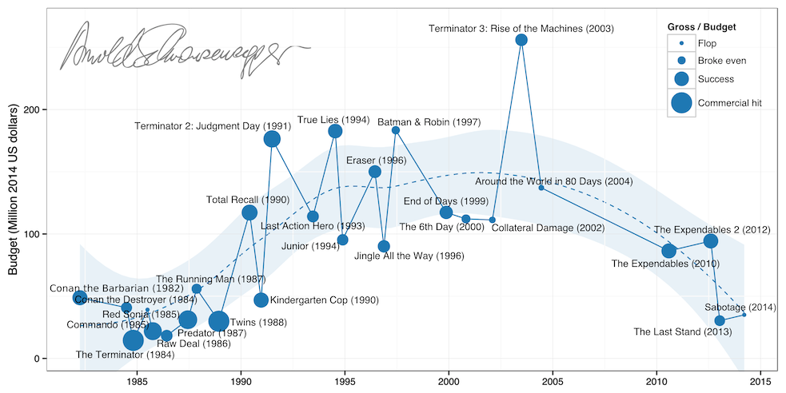

Hollywood action heroes
Arnie 2010 (source)
I recently read Arnie's autobiography (great fun) and in it he writes about the various roles he's had, discussing those movies that flopped or were surprise box office successes, but it's hard to build up an overall picture of his career from these fragments. Similarly the raw filmography lists at IMDb and Wikipedia are pretty uninspiring.
That gave me the idea of charting his movie career over time, attempting to show a lot of information at once about how well the film did at box office relative to its budget, and at what points these successes and failures happened over the last few decades. After some python-powered scraping of IMDb data, this is what I came up with:
{kind=link}
It's interesting to see the trajectory from back-to-back hits in low budget action films (Terminator, Predator, Commando) to a peak of a $200 million budget for Terminator 3 (considerably more in 2014 dollars, after adjusting for inflation). Of course you can then see his stretch as Governor of California from 2003-11, punctuated only by a memorable cameo in The Expendables (and an excluded minor role in The Kid & I).
The eagle-eyed will notice some films are missing, there's no Hercules in New York and others of his earliest films. This is down to IMDb's budget and gross listings being woefully incomplete, but thankfully most of his famous lead roles are shown.
These next obvious step was to look at other actors that fill a similar niche; how does Sly Stallone compare? What about the more recent action stars?
Sylvester Stallone
Bruce Willis
Jet Li
Jackie Chan
Jason Statham

Vin Diesel
Steven Seagal
Dwayne Johnson
So we've learnt that Bruce Willis is in way too many films to label clearly, and Jackie Chan doesn't seem to mind frenetically jumping from big-money blockbusters and low-budget action flicks.
Fancy a gamble? Pick Sly or Jackie as your lead.
All-time totals per actor
Another (possibly fairer) way to compare these guys is by total budgets and grosses over their careers. It's not entirely clear where IMDb gets these values from, so the absolute numbers should be taken with a pinch of salt.
Here's the same graph but by box office takings. These numbers from IMDb are even more suspect and vary according to different sources. Additionally, to convert the gross to 2014 dollars I used a measure of inflation from the year the film was released in — to calculate this more accurately you need a breakdown of the gross over time. Unlike lists at Box Office Mojo, these charts do sometimes contain cameo roles (e.g. Bruce and Arnie get Expendables I credits), and as I mentioned with Arnie, there's unfortunately some missing or incomplete data on IMDb which has lead to some films being excluded.
It turns out Sly has grossed more than Arnie on smaller budgets! We can also see Jackie Chan punches well above his weight in terms of absolute earnings, as well as ROI.
Finally here's budget plotted against gross for most of the individual films used in this analysis.
I'm tidying up the code but the python and R scripts to recreate the above analysis will soon be on github, and it should be pretty straightforward to extend this over any other actors or actresses you might be interested in.
Other projects you might like:
See more on my Wordpress blog
comments powered by Disqus